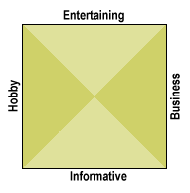

|
| ||
|
| ||
Robert Hess
Developer Relations Group
Microsoft Corporation
March 23, 1998
The following article was originally published in the Site Builder Network Magazine "More or Hess" column, now found in MSDN Online Voices.
As you browse the Internet, you encounter a wide variety of Web sites. Their variety comes not only in the content they contain, but also in the approach that has been chosen to present them.
I'm sure this can be analyzed in thousands of different ways, but I don't want to write a book here. Instead, let's take a look at a relatively simple approach. Here is a grid that often springs to my mind when I'm looking through Web sites:

"Entertaining" and "Informative" are two opposing approaches, and "Hobby" and "Business" are the other two opposing approaches. Where a site lies on this grid depends on how its content is positioned.
A Web site can be basically entertaining, such as http://www.TheCorporation.com/  , or it can be basically informational, such as the Web Elements
, or it can be basically informational, such as the Web Elements  page
page
The differences between these two Web sites should be pretty clear. "The Corporation" is a fairly creative Web site whose primary purpose is to entertain, and at the same time poke a little fun at the very medium in which it is presented. The Web Elements site is devoid of any sense of entertainment; however it definitely contains very useful information (for some people).
In general, a Web site won't be "purely entertaining" or "purely informative," but usually some blending of the two -- as might be found here in the MSDN Online Web site (my editors made me say that).
This particular axis is extremely crucial in Web site design. The Web was originally designed as a method of providing information. To a certain extent, this remains one of the Web's main purposes today. Few people are on the Web looking just for entertainment -- unless you count us geeks who find information itself to be entertaining. Eventually, the Web may become so commonplace and accessible that it will be as prevalent an entertainment medium as the telephone, TV, radio, or the local pub. Until such a time, Web sites need to be designed with an entertainment theme only when it is essential to achieving the goals outlined for that site.
An information-oriented site is important for another reason: It is easier to find. Search engines are still one of the more common ways of locating a site, and by the way that most search engines are designed, it is far easier to categorize "key" words within the informational content of a Web site, than to locate a humorous story. The most common search engines usually work by "crawling" a site. This means they start on a particular page of the site, and follow the various links on the page, seeking to look at all of the pages associated with the site. While the engine is doing this, it is collecting information and keywords from the page to add to the search site's database. This way, when a user of the search engine asks for pages that include "digital near typography," it will be able to return the 2,000 or so pages that "might" have something to do with digital typography.
Some search sites, such as http://www.Yahoo.com/  , can categorize the information they present, and break it down into conceptual areas. From the home page, you can click on "Humor," and on the next page click "Stories": You then see a list of eight sites described as containing humorous stories. This approach, however, is not automated. It requires human interaction to organize the categories and validate the registered sites as belonging in particular categories. As you might expect, this takes time. I submitted one of my sites to Yahoo over a month ago, and it still hasn't shown up in a search of Yahoo -- while Alta Vista (a crawling search engine site) had it in its database within a couple of days.
, can categorize the information they present, and break it down into conceptual areas. From the home page, you can click on "Humor," and on the next page click "Stories": You then see a list of eight sites described as containing humorous stories. This approach, however, is not automated. It requires human interaction to organize the categories and validate the registered sites as belonging in particular categories. As you might expect, this takes time. I submitted one of my sites to Yahoo over a month ago, and it still hasn't shown up in a search of Yahoo -- while Alta Vista (a crawling search engine site) had it in its database within a couple of days.
A Business site is trying to sell a product, or in some other fashion provide a service that (hopefully) results in the site making money. An example of this would be BarnesandNoble.com  . A Hobby site is simply presenting something to the general public without any anticipated return. The Web is full of such sites; an example would be the Slide Rule Trading Post
. A Hobby site is simply presenting something to the general public without any anticipated return. The Web is full of such sites; an example would be the Slide Rule Trading Post  .
.
At first, it may seem that there is a pretty strong division between the Business and Hobby opposites on the grid. This is partly because of the labels I chose to use. The labels probably should be more like "I'm trying to make as much money as humanly possible" and "I have no intention whatsoever of making any money with this site"; those labels were too large for the graph. In that frame of mind, there is a fairly gradual scale between the two ends -- and many of our hobbies end up turning into money-making opportunities.
Each of these four approaches at content focus is a valid way to direct your Web site. A site that falls in the center of this matrix is no better than one that falls into the upper right hand quadrant. It's important to understand how your Web site fits in the matrix. By this, I don't just mean how your information fits -- but also how the users to your site are expecting your information to fit.
We've all run into sites whose creators obviously don't have a clue as to what they are trying to do. These sites are on the Web simply because they think they should be. Sometimes they are hobby sites, talking about a topic or issue in which nobody is interested, except their creators. Even corporate sites, with lots of time and money spent on fancy graphics and fast servers, can totally miss the point of what they should be saying.
The success of your Web site depends on how well you understand your audience, and how good you are at giving them what they want.
Robert Hess is an evangelist in Microsoft's Developer Relations Group. Fortunately for all of us, his opinions are his own and do not necessarily reflect the positions of Microsoft.
Did you find this material useful? Gripes? Compliments? Suggestions for other articles? Write us!
© 1999 Microsoft Corporation. All rights reserved. Terms of use.